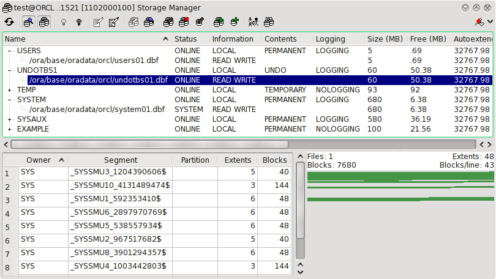

4.8 Storage Manager
This tool provides an easy interface to administrate tablespaces and datafiles.

As you can see in the screenshot above the tool is a list of all the tablespaces available in the database. The tablespaces can be expanded to display the datafiles they consist of. There is also one option available to this tool, whether to collect information about how coalesced the tablespaces are, the coalesced fetching can be very slow on fragmented databases and if TOra seems to lock itself when you try to start this tool try resetting that option to not show coalesced info. Using the toolbar you can perform these commands.
- Refresh
- Update the view.
- Show extent view
- TODO.
- Show tablespaces or just datafiles
- TODO.
- Take tablespace online
- Take the selected tablespace online.
- Take tablespace offline
- Take the selected tablespace off-line.
- Set tablespace default to logging
- Enable logging for the selected tablespace.
- Set tablespace default to no logging
- Disable logging for the selected tablespace.
- Allow read write access to tablespace
- Enable read and write access to the selected tablespace.
- Set tablespace read only
- Only allow read only access to the selected tablespace.
- Modify tablespace
- Modify the selected tablespace settings. If you don't understand the settings in this dialog please refer to the Oracle Server Concepts manual.
- Drop tablespace
- TODO.
- Modify file
- Modify the current datafiles settings. If you don't understand the settings in this dialog please refer to the Oracle Server Concepts manual.
- Create new tablespace
- Create a new tablespace. If you don't understand the settings in this dialog please refer to the Oracle Server Concepts manual.
- Add datafile to tablespace
- Create a new datafile for the currently selected tablespace. If you don't understand the settings in this dialog please refer to the Oracle Server Concepts manual.
- Coalesce tablespace
- Coalesced free data in the current tablespace.
- Move datafile
- Move a datafile to another location.
- Change connection
- Change the connection to administrate storage for.
When you select a tablespace or datafile the lower part of this tool displays the objects (to the left) and extents (to the right) in that tablespace or file. A used extent is displayed as green in the extent view if the object it belongs to is not selected in the list to the right. Selecting an item in the list to the right will paint it's extents red in the right extent view. Unallocated space is colored whie. Some information about the number of files and extents are displayed at the top of the extents display. Several datafiles are separated by one line of black in the extent view if a tablespace containing several files are viewed.